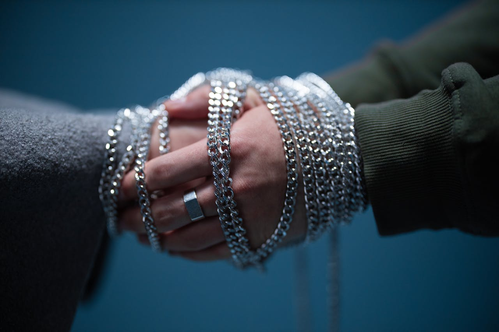

There's this void
I can't really explain
And if I ever tried
I'd be called 'deranged'
Nothing that I ever do
Feels worth it anymore
Feels like I'll always have a crisis
For forever and more
Like a Catterpillar
Surrounded by Vibrant Butterflies
Why can't something I do
Just for once be right
Every acheivement I have feels like a favor
Everyone, I fear, will one day become a traitor
And whenever I try to have a fresh start
I am humbled by the cuts in my heart.

It only gets better
is a full fledged lie
Thus, everytime I need to apply a coat of dye
So I can retain the pain of having your heart torn.
Whilst everyone you've known had you warned.
Nothing I do has ever been enough
And I realise everyone has had it rough.
So I continue what I've been doing Losing, losing, losing and losing
Temporary is a word, that I live by because
"It only gets better" is a full fledged lie

Crossing all the greatest oceans
I would've confessed my love for you
Being the answer to my questions
Was the only thing you had to do
I stay tied up, with the strings you made
As I watch the reality of us fade
Into the dark, out of your mind
As I become an insignificant chapter of your life
If I were the poet, we could have been the poetry
But you were the author and we were the book put aside for eternity.

The poison, the cure, the pain I endured.
The charade, the ruse, the memory of the bruise
My heartbreak, our wake,
The death of us and it's ache.
Your heart was a jewel and mine was to break
The destiny I thought we had ceases to exist
Your mind, your soul, I find hard to resist.
I am drenched in the pain
That comes from the thirst you inflicted.
Still bound, still chained
Like a maniac, like an addict
I lie with the losses
I wake with the memories
In this loveless maze
I am engulfed in your nonexistent haze.
My wounds didn't heal,
I had to bury them deep
And to transform into scars.
I put my life in jars,
Gathered, organized, stuffed and put away.
The wounds, the scars, the jars have turned grey.
Grey from neglect, Grey from the dirt, Grey from being buried
Red for the shame,
Red from the pain of being the one who had to bleed.
And if by some miracle,
All our stars somehow align
I hope you know I won't let us shine
For you've tossed my heart and shattered it for far too long
Being the only other eyewitness, it is, now I realize, too wrong
I am a secret of yours, destined to be concealed
And ours is a matter, I wish deeply to be sealed
You and I have a bond so unforgettable
Wish I could forget that we're too imperfect to be stable
Every February
I still remember
How we shared each memory
That led to our failure
And in the month of love
I am forced to face
How all fragments of my heart were crushed
When I fell in love but you liked the chase
Holding onto you was my mistake
This loop I have been trapped in, why won't it break?
God knows you needed
The love that I gave
To be a momentary haven
In this endless cave
I no longer love you
Nor will I ever
What I gave you was true
And you'll be in my prayers forever
You didn't ask
But I'll forget you anyway
And someday, by some chance if we ever pass
Don't come towards me or say hey
I might have forgotten but not forgiven
How you once left my heart so frail
Within us I try to find
Not you, but the solace and tranquility
That bloomed inside me with every step we took
And I try to walk those walks again
Disguising my intentions even from myself
Searching for a feeling so familiar
For it is impossible to retain within my fists
I do not desire your presence
But remain vexed by your past
For it was too cruelly loving
To someone who hadn't yet broken his own heart
It is not you that I want but it is me myself
A time so simple that led to pure laughs
Born out of rejoice and contentment
Satisfaction that I once had
Self hate that I once did not shed
Confidence that I once knew
And the peace within me that beautifully grew
Healing from you was harder than being on fire
Every night now I can't sleep till it's before 5
And I Hope you get what it is you desire
Cut me up, cut us off so I don't see you thrive
Said I was the only one who made you feel safe
Then how come I find myself standing at our grave
You told me that I handled your anxiety graciously
What a fool I was to believe you so half-wittedly
Why did you have to uproot the branch joining us
Now all's that left is broken promises and a curse
I chased after you cause you chased after me
Now I exit the island where I was stranded miserably
And I feel the final remnants of us leave me be
Today I move on from what was once my priority
And I know when I drown is when I'm finally free
I pray that one day you become more mature
And you find the peace I was ready to offer
Exhausted from always asking how are you
Now no one asks whether my face shows the truth
And I have been feeling left out ever since I turned 9
Now anything I do appears as if its a crime
What do I have to do to prove my worth
Being the gifted one has been more of a curse
All one has to do is expect
And all that's expected is what I accept
I worked with my outmost dedication
To get nothing in return
Put down by fate, leading me to ruin
I wish I did not work to my capability earlier
For it was in vain and all it did was cause me pain
Everyone assumes I always lived at the peak
Not a soul now sees how I endured the trek
And all of this, All this for what?
For the expectations put on me, I now fall short
With the submission of this file.
I lay to rest, my feelings for the muse.
Worshipped you with purity,
Loved you aunthentically,
Took my revenge, Stole my closure,
Vanished from your Life,
For now and forever.
I hope I meet you in another life
And you once again crush my delicate heart...